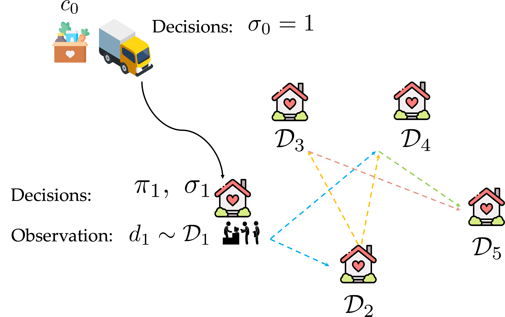
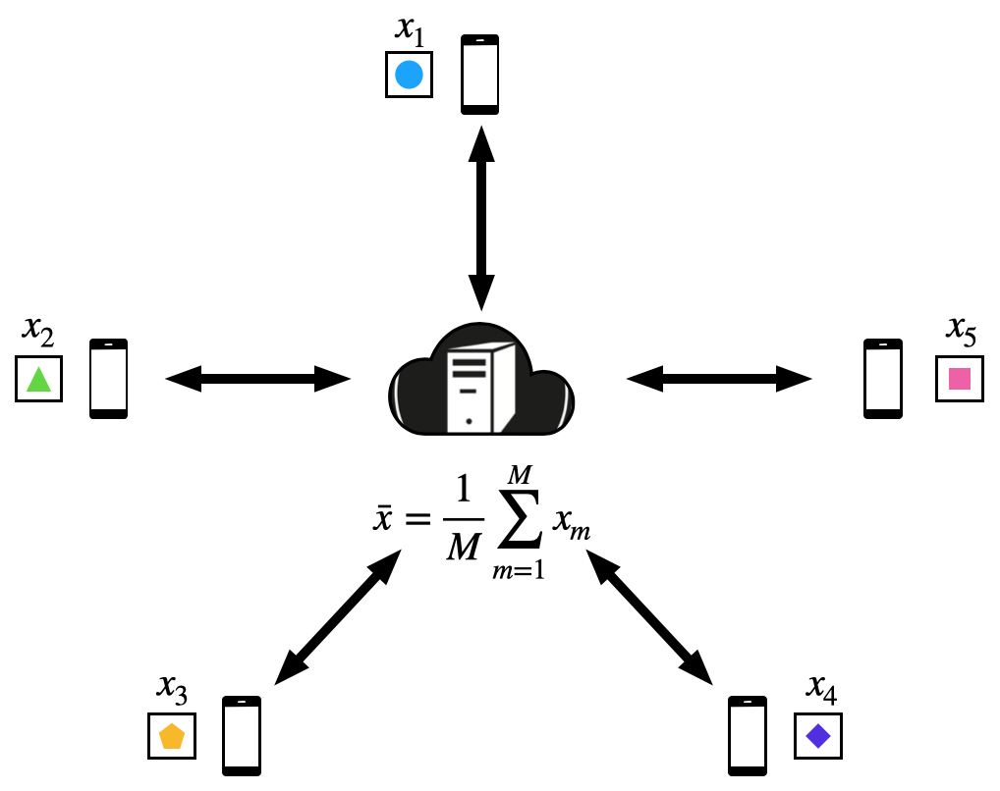

|
Haiqing Gao
I'm a fifth-year PhD student in the Industrial Engineering and Management Sciences department at Northwestern University.
I received my B.S. in Applied Math and M.Phil. in Computer Information and Engineering from the Chinese University of Hong Kong, Shenzhen. I'm currently advised by Seyed M.R. Iravani , and my research focuses on data-driven sequential decision-making in non-profit operations. My recent work applied dynamic programming (DP) models to provide insights for optimizing food pantry operations of food banks.
Email /
CV /
Github
|
|
Research
My research focuses on mathematical modeling and stochastic optimization, with applications in supply chain management and fair resource allocation. I study the structure of optimal allocation and routing policies to connect optimization theory with practical insights for sequential decision-making under uncertainty. More broadly, I develop models that support interpretable decisions and provide actionable insights for managers.
|
 |
Sequential Fair Allocation and Routing in Nonprofit Operations
Haiqing Gao, Seyed M.R. Iravani, and Sean R. Sinclair
Submitted to Operations Research, June 2026; under review.
arXiv:2606.19278
Motivated by food banks and humanitarian relief, this project jointly optimizes resource allocation and visitation order when community demands are uncertain. We characterize threshold allocation policies and routing rules, develop a practical heuristic, and examine how different fairness objectives shape operational decisions and fairness outcomes.
|
|
Sequential Fair Allocation and Collection of a Capacitated Truck with Stochastic Supply in Nonprofit Operations
Haiqing Gao and Seyed M.R. Iravani
Working paper.
This project studies how a capacity-limited truck can collect uncertain donations and fairly distribute resources to communities with uncertain demands. Using dynamic programming, we characterize monotonicity and threshold structures that support interpretable allocation and collection decisions.
|
|
Multi-vehicle Sequential Fair Allocation and Routing: A Linear Approximation Model
January–March 2026
This project extends sequential fair allocation and routing to humanitarian distribution with multiple vehicles. We formulate a stochastic mixed integer optimization model and develop a two-stage approximation that separates community clustering from sequential allocation and routing to improve computational tractability.
|
|
Concept Drift Detection during Online Federated Learning from Hybrid Data
May 2026–present
Motivated by collaborative learning across hospitals, this project develops federated learning methods that adapt to changing data distributions without sharing patient data. We integrate gradient tracking, concept drift detection, and randomized client scheduling, with dynamic regret and probabilistic convergence guarantees.
|
 |
Hybrid Machine Learning via Gradient Tracking (FedHD) / Communication-Efficient Federated Learning from Hybrid Data
Haiqing Gao, Songyang Ge, and Tsung-Hui Chang
Published as “FedHD: Communication-Efficient Federated Learning from Hybrid Data,” Journal of the Franklin Institute, 2023.
ScienceDirect
This project develops a gradient tracking algorithm for federated learning when clients hold different subsets of samples and features. The method supports privacy-preserving collaborative training, with theoretical convergence guarantees and improvements in accuracy and convergence speed over local training.
|
|
Federated Q-learning for mHealth Interventions
October–December 2020
This project develops personalized federated Q-learning with Bayesian learning for adaptive mobile health interventions. The framework learns from distributed patient data without centralizing individual records and accelerates convergence while maintaining accuracy.
|
|
Fair Driver Order Dispatch on the Online Ride-Hailing Platform
March–August 2019
This project studies fair and efficient matching of arriving ride requests to reusable drivers when customers may abandon the platform. We model the problem as stochastic online matching and develop dispatch algorithms using multi-armed bandits and an online Hungarian bottleneck approach.
|
Teaching
Northwestern University
IEMS 303: Statistics, Fall Quarter 2024
IEMS 307: Quality Improvement by Experimental Design, Spring Quarter 2024
IEMS 302: Probability, Winter Quarter 2024
IEMS 201: Introduction to Statistics or Data-Driven Decision-Making, Fall Quarter 2023
The Chinese University of Hong Kong, Shenzhen
MAT 3253: Complex Variables, Spring Semester 2022
STA 2001: Probability and Statistics I, Spring Semester 2019
|
|